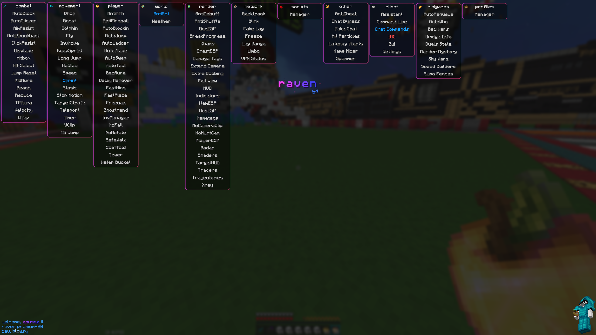

Rebuilt ClickGUI
Animated category open and close, drag-to-reorder with a live reflow, and hit-testing that stays correct while panels are mid-animation.
Free · Open source · Forge 1.8.9
Ryause is built from the Raven B4 u20 source with the backend stripped out: no API calls, no account, just the client. 116 modules, a rebuilt ClickGUI, and official profiles you can install without leaving the game.

What is inside
Combat, movement, player, world, render, network, minigames and more — all driven by the same module system Raven B4 is known for.
Animated category open and close, drag-to-reorder with a live reflow, and hit-testing that stays correct while panels are mid-animation.
From KillAura, Backtrack and Scaffold to Sky Wars, Duels Stats and Murder Mystery helpers — across 11 categories.
Browse the official repository in-game, install with one click, apply with the next. Downloads are SHA-1 checked and the list refreshes every five seconds.
A full command line, chat commands, and the script manager. profiles online works from the console exactly as it does from the GUI.
Drag-and-drop HUD editing, ESP, nametags, indicators, chams, and a target HUD — every element placed where you want it.
All API calls and backend references were removed from the source. Your config and profiles stay on your machine.
Official repository
Pulled live from Ryause-Official-Profiles. In-game, open Manager → Browse online.
In-game
Open the Manager module and press Browse online, or use the console. Click a command to copy it.
Get started
Use the 1.8.9 Forge installer and launch the profile once so the game files are created.
modsBuilds are named Ryause-MMDDYY+n.jar. Put one in .minecraft/mods — nothing else is required. No jar yet? Run .\gradlew.bat build; the output lands in Ryause-Build\.
Start the Forge profile and press Right Shift. Your config and profiles live in keystrokes/.
Questions
Yes. The client is free and the source is public on Codeberg. There is no account, licence key or paid tier.
Minecraft 1.8.9 with Forge only. Newer Minecraft versions are not supported.
Downloaded profiles are written to keystrokes/profiles/ inside your game directory. In-game they appear under the Profiles category in the ClickGUI.
No. All API calls and backend references were removed from the source. The only network requests are the ones you trigger: the online profile index and its files, plus anything a module explicitly needs.
Replace the old jar in mods with the new one. Your settings in keystrokes/ are kept, so modules and binds carry over.
Press Refresh in the online profiles screen. If it still fails, check your connection or point the client at the repository manually with profiles online repo SkidderiumX/Ryause-Official-Profiles.